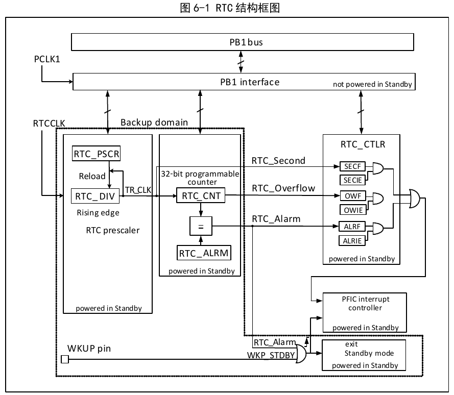

The Real-Time Clock (RTC) is an independent timer module. Its programmable counter can be up to 32 bits. Combined with software, it can implement real-time clock functions, and the counter value can be modified to reconfigure the system's current time and date. The RTC module is located in the backup power domain; system reset and wake-up from Standby mode do not affect it.

As shown in Figure 6-1, the RTC module consists mainly of three parts: the PB1 bus interface, the divider and counter, and the control and status registers. The divider and counter are located in the backup domain and can be powered by VBAT. After RTCCLK enters the divider (RTC_DIV), it is divided to produce TR_CLK. Note that the divider (RTC_DIV) internally is a down-counter; when it underflows, it outputs one TR_CLK and then reloads the preset value from the reload value register (RTC_PSCR). Reading the divider actually reads its real-time value (read only); the prescaler factor should be written to the reload value register (RTC_PSCR). Generally, the TR_CLK period is set to 1 second. TR_CLK triggers a second event and simultaneously increments the main counter (RTC_CNT) by 1. When the main counter increments to match the alarm register value, an alarm event is triggered. When the main counter increments to overflow, an overflow event is triggered. All three events can trigger interrupts, each controlled by a corresponding interrupt enable bit.
Due to the special purpose of the real-time clock, its four register groups in the backup domain — prescaler, prescaler reload value, main counter, and alarm — can only be reset by the backup domain reset signal; refer to the RCC backup domain reset section. The control register of the real-time clock is controlled by system reset or power reset.
Due to the special purpose of the real-time clock, the RTC is independent from the PB1 bus. PB1 reads of the RTC are not necessarily real-time. Reading RTC registers through PB1 must occur after PB1 is started and after one RTC rising edge. This situation may occur after system reset and power reset, or after wake-up from Standby or Stop mode. A convenient approach is to wait for the RSF bit in the control register (CTLR) to be set. Writing to the RTC requires waiting for the previous write operation to finish, and configuration mode must be entered. The specific steps are:
| Name | Address | Description | Reset Value |
|---|---|---|---|
| R16_RTC_CTLRH | 0x40002800 | RTC control register high | 0x0000 |
| R16_RTC_CTLRL | 0x40002804 | RTC control register low | 0x0020 |
| R16_RTC_PSCRH | 0x40002808 | Prescaler reload value register high | 0x000X |
| R16_RTC_PSCRL | 0x4000280C | Prescaler reload value register low | 0xXXXX |
| R16_RTC_DIVH | 0x40002810 | Divider register high | 0x000X |
| R16_RTC_DIVL | 0x40002814 | Divider register low | 0xXXXX |
| R16_RTC_CNTH | 0x40002818 | RTC counter register high | 0xXXXX |
| R16_RTC_CNTL | 0x4000281C | RTC counter register low | 0xXXXX |
| R16_RTC_ALRMH | 0x40002820 | Alarm register high | 0xXXXX |
| R16_RTC_ALRML | 0x40002824 | Alarm register low | 0xXXXX |
Offset address: 0x00
| 15 | 14 | 13 | 12 | 11 | 10 | 9 | 8 | 7 | 6 | 5 | 4 | 3 | 2 | 1 | 0 |
|---|---|---|---|---|---|---|---|---|---|---|---|---|---|---|---|
| Reserved | OWIE | ALRIE | SECIE | ||||||||||||
| Bits | Name | Access | Description | Reset |
|---|---|---|---|---|
| [15:3] | Reserved | RO | Reserved. | 0 |
| 2 | OWIE | RW | Overflow interrupt enable: 1: Enable; 0: Disable. |
0 |
| 1 | ALRIE | RW | Alarm interrupt enable: 1: Enable; 0: Disable. |
0 |
| 0 | SECIE | RW | Second interrupt enable: 1: Enable; 0: Disable. |
0 |
Offset address: 0x04
| 15 | 14 | 13 | 12 | 11 | 10 | 9 | 8 | 7 | 6 | 5 | 4 | 3 | 2 | 1 | 0 |
|---|---|---|---|---|---|---|---|---|---|---|---|---|---|---|---|
| Reserved | RTOFF | CNF | RSF | OWF | ALRF | SECF | |||||||||
| Bits | Name | Access | Description | Reset |
|---|---|---|---|---|
| [15:6] | Reserved | RO | Reserved. | 0 |
| 5 | RTOFF | RO | RTC operation status indicator, indicating the execution status of the last operation on the RTC. RTC operations must wait for this bit to be 1. 1: The last RTC operation has completed; 0: The last RTC operation is still in progress. |
1 |
| 4 | CNF | RW | Configuration flag. Writing 1 to this bit enters configuration mode, thereby allowing values to be written to the counter (R16_RTC_CNTx), alarm register (R16_RTC_ALRMx), and prescaler reload value register (R16_RTC_PSCRx). The write operation is only executed after this bit is written 1 and then cleared by software: 1: Enter configuration mode; 0: Exit configuration mode, start updating RTC registers. |
0 |
| 3 | RSF | RW0 | Register synchronization flag. Before reading or writing the RTC module's prescaler (PSCRx), alarm (ALRMx), and counter (CNTx) registers, this bit must be set by hardware to confirm these registers have been synchronized. When reading/writing these registers, or after PB1 reset or PB1 clock stop, this bit should be cleared first. 1: Registers have been synchronized; 0: Registers not synchronized. |
0 |
| 2 | OWF | RW0 | Counter overflow flag. When the 32-bit counter overflows, this bit is set by hardware. If the OWIE bit is set, an overflow interrupt is also generated. This bit can only be cleared by software and cannot be set by software. | 0 |
| 1 | ALRF | RW0 | Alarm flag. When the counter value reaches the alarm register (ALRMx) value, this bit is set by hardware. If the alarm interrupt enable bit (ALRIE) is set, an alarm interrupt is also generated. This bit can only be cleared by software and cannot be set by software. | 0 |
| 0 | SECF | RW0 | Second event flag. After the clock passes through the prescaler, each falling edge generated increments the counter by 1 and simultaneously generates a second event; this bit is set. If the second interrupt is enabled (SECIE set), a second interrupt is also generated. This bit can only be cleared by software and cannot be set by software. | 0 |
Offset address: 0x08
| 15 | 14 | 13 | 12 | 11 | 10 | 9 | 8 | 7 | 6 | 5 | 4 | 3 | 2 | 1 | 0 |
|---|---|---|---|---|---|---|---|---|---|---|---|---|---|---|---|
| Reserved | PRL[19:16] | ||||||||||||||
| Bits | Name | Access | Description | Reset |
|---|---|---|---|---|
| [15:4] | Reserved | RO | Reserved. | 0 |
| [3:0] | PRL[19:16] | WO | Reload value high. | x |
Offset address: 0x0C
| 15 | 14 | 13 | 12 | 11 | 10 | 9 | 8 | 7 | 6 | 5 | 4 | 3 | 2 | 1 | 0 |
|---|---|---|---|---|---|---|---|---|---|---|---|---|---|---|---|
| PRL[15:0] | |||||||||||||||
| Bits | Name | Access | Description | Reset |
|---|---|---|---|---|
| [15:0] | PRL[15:0] | WO | Reload value low. The actual prescaler factor is (PRLL[19:0]+1). For example, if the RTC input frequency is 32768 Hz, setting this value to 0x7fff produces a signal with a 1-second period. | x |
Offset address: 0x10
| 15 | 14 | 13 | 12 | 11 | 10 | 9 | 8 | 7 | 6 | 5 | 4 | 3 | 2 | 1 | 0 |
|---|---|---|---|---|---|---|---|---|---|---|---|---|---|---|---|
| Reserved | DIV[19:16] | ||||||||||||||
| Bits | Name | Access | Description | Reset |
|---|---|---|---|---|
| [15:4] | Reserved | RO | Reserved. | 0 |
| [3:0] | DIV[19:16] | RO | Divider register high. | x |
Offset address: 0x14
| 15 | 14 | 13 | 12 | 11 | 10 | 9 | 8 | 7 | 6 | 5 | 4 | 3 | 2 | 1 | 0 |
|---|---|---|---|---|---|---|---|---|---|---|---|---|---|---|---|
| DIV[15:0] | |||||||||||||||
| Bits | Name | Access | Description | Reset |
|---|---|---|---|---|
| [15:0] | DIV[15:0] | RO | Divider register low. DIV is actually a down-counter; each RTC_CLK clock decrements the DIV counter by 1. On underflow, a TR_CLK is output and the value is reloaded from PSCR. DIV is read-only; reading it returns the remaining value of the current divider counter. | x |
Offset address: 0x18
| 15 | 14 | 13 | 12 | 11 | 10 | 9 | 8 | 7 | 6 | 5 | 4 | 3 | 2 | 1 | 0 |
|---|---|---|---|---|---|---|---|---|---|---|---|---|---|---|---|
| CNT[31:16] | |||||||||||||||
| Bits | Name | Access | Description | Reset |
|---|---|---|---|---|
| [15:0] | CNT[31:16] | RW | Counter high. | x |
Offset address: 0x1C
| 15 | 14 | 13 | 12 | 11 | 10 | 9 | 8 | 7 | 6 | 5 | 4 | 3 | 2 | 1 | 0 |
|---|---|---|---|---|---|---|---|---|---|---|---|---|---|---|---|
| CNT[15:0] | |||||||||||||||
| Bits | Name | Access | Description | Reset |
|---|---|---|---|---|
| [15:0] | CNT[15:0] | RW | Counter low. The core device of the RTC timer, clocked by TR_CLK (period generally set to 1 second). The current time is calculated by reading CNT[31:0]. Writing this value requires entering configuration mode. | x |
Offset address: 0x20
| 15 | 14 | 13 | 12 | 11 | 10 | 9 | 8 | 7 | 6 | 5 | 4 | 3 | 2 | 1 | 0 |
|---|---|---|---|---|---|---|---|---|---|---|---|---|---|---|---|
| ALR[31:16] | |||||||||||||||
| Bits | Name | Access | Description | Reset |
|---|---|---|---|---|
| [15:0] | ALR[31:16] | WO | Alarm register high. | x |
Offset address: 0x24
| 15 | 14 | 13 | 12 | 11 | 10 | 9 | 8 | 7 | 6 | 5 | 4 | 3 | 2 | 1 | 0 |
|---|---|---|---|---|---|---|---|---|---|---|---|---|---|---|---|
| ALR[15:0] | |||||||||||||||
| Bits | Name | Access | Description | Reset |
|---|---|---|---|---|
| [15:0] | ALR[15:0] | WO | Alarm register low. When the alarm register ALRM[31:0] value matches the counter CNT[31:0] value, an alarm event is generated. Changing this value requires entering configuration mode. | x |